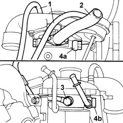
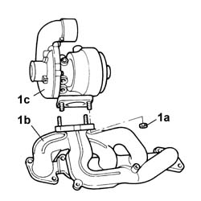

1064A20 TURBOCHARGER ASSEMBLY - DISMANTLING AND REASSEMBLY
- Path
- Procedures > 10 ENGINE > 1064 ENGINE SUPERCHARGING SYSTEM > 1064A TURBOCHARGER ASSEMBLY > 1064A20 TURBOCHARGER ASSEMBLY - DISMANTLING AND REASSEMBLY
- Kind
- repair procedure (removal / refitting; the operation number is the code)
- Applies to
- engines: 2.0 TB; all production periods
- Interactive page
- https://sloeber94.github.io/elrnDB-lThss/en/#/498969
Applies to: engines: 2.0 TB; all production periods
 Removing
Removing
 Refitting
Refitting- Place the turbocharger assembly in the vice.
1. Disconnect the two pipes connected to the turbocharger by-pass valve.
2. Undo the fixing bolts and remove the oil return pipe.
3. Undo the oil supply connector.
4. Undo the coolant inlet (4a) and outlet (4b) connectors.

Applies to: engines: 2.0 TB; all production periods
1. Undo the fixing nuts (1a) and separate the exhaust manifold (1b) from the turbocharger (1c).

Applies to: engines: 2.0 TB; all production periods
Refitting
Removing- Fit the turbocharger on the exhaust manifold.
- Tighten the fixing nuts to torque.
 | Value - daNm | Fastening | Component | Ø |
|---|---|---|---|---|
. | 2.5 | Nuts | TURBOCHARGER | M8 |
- Tighten the coolant inlet and outlet connector.
- Fit the oil return pipe and tighten the fixing bolts.
- Tighten the oil supply connector.
- Remove the turbocharger assembly complete with exhaust manifold.